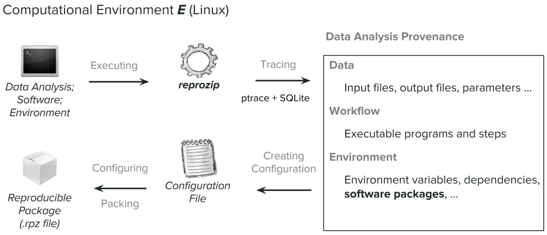
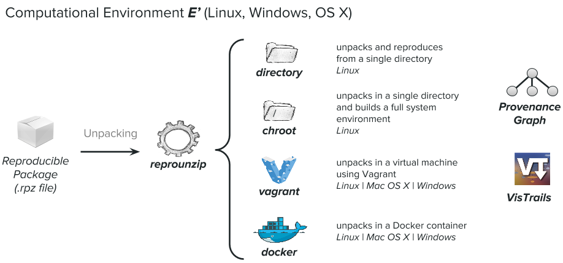

Getting Use Cases is Hard
One of my big tasks since coming into NYU last August was to work on the ReproZip project. My role is largely outreach and education: I was tasked with teaching ReproZip and general reproducibility principles, gathering use cases in a wider variety of disciplines (when I arrived, the use cases were largely in computer science), and supporting users in general.
ReproZip kind of blew my mind when I arrived; it's an open source software tool that simplifies the process of creating reproducible experiments. Basically it tracks operating system calls and creates a package that contains all the binaries, files, and dependencies required to reproduce the experiment. A reviewer can then extract the experiment on their own machine using ANY operating system (even if it's different from the original one!!) to reproduce the results. As a librarian, I was like "OH MY GOD. THE DIGITAL PRESERVATION GAME JUST GOT UPPED." Anyway, here's basically how ReproZip works -- in 2 steps:
Step 1: Packing
Step 2: Unpacking
Rémi Rampin, the current developer of ReproZip, Fernando Chirigati, the former developer, and I created this great GitHub repository called ReproZip Examples, dedicated to showcasing examples and use cases from different domains using ReproZip. We have everything from digital humanities (a history paper used ReproZip!) to archived websites and client-server architecture, to machine learning. It's awesome -- check it out and try to unpack stuff if you want!
I'm really advocating hard for libraries to start at least investigating using ReproZip for their digital collections -- there is so much unused potential for this it's actually crazy, which brings us around to the title. Getting use cases is hard.
In May, Rémi and I will be at the Data and Software and Preservation for Open Science workshop, Container Strategies for Data Software Preservation that Promote Open Science. I'm serving as an external organizer, but the two of us will be doing some extensive work with ReproZip while there.
Image from the DASPOS website.
The DASPOS project, NSF funded, "represents a collective effort to explore the realization of a viable data, software, and computation preservation architecture for High Energy Physics (HEP)." But at this point, it's grown FAR beyond HEP -- the workshop so far is slotted to have representation from a variety of fields and professions (like libraries!!).
In addition to a talk/demo during the conference proceedings, Rémi and I are leading three breakout sessions that will allow people to try out ReproZip for themselves, using their research if they brought some. I'm hoping that, with the new ReproZip-Examples, we can get some people at the DASPOS workshop to add their own .rpz packages for us to try and reproduce! This would be the best-case scenario, but it depends a lot on the research of the participants.
Anyway. I'm really looking forward to learning more about some other containerizing tools like Umbrella and meeting some other folks (hopefully a lot of librarians!!) who are involved in the reproducibility and preservation space. The community doing active tool development in this area seems fairly small, so it'll be great for fostering interoperability having us all in a room.